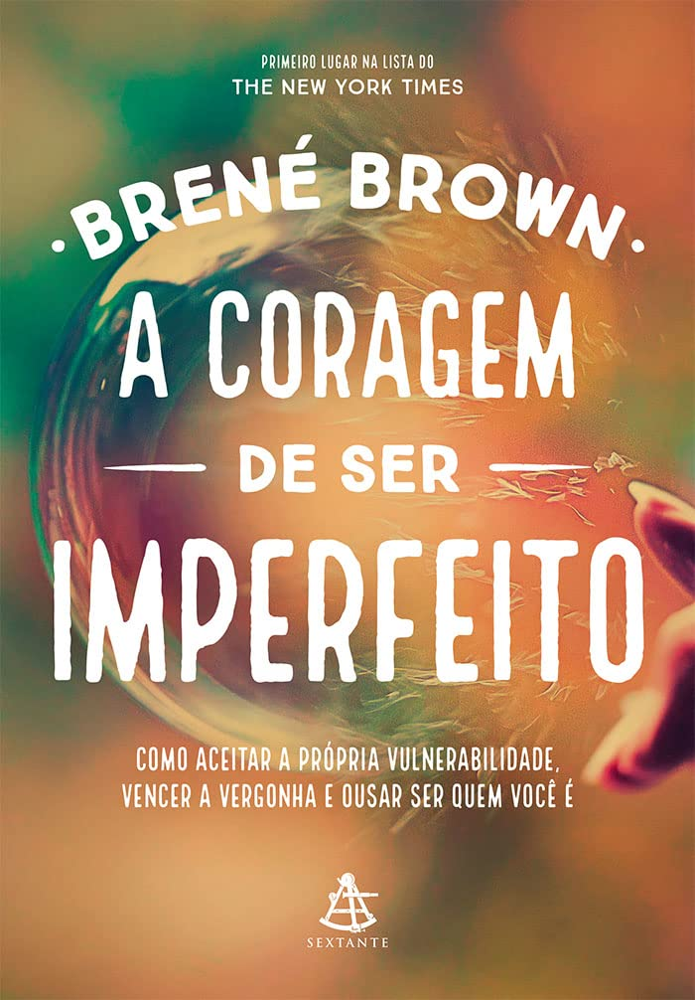

Pai Rico Pai Pobre

Sinopse
Celebrando 20 anos como o livro n° 1 em finanças pessoais. A escola prepara as crianças para o mundo real? Essa é a primeira pergunta com a qual o leitor se depara neste livro. O recado é ousado e direto: boa formação e notas altas não bastam para assegurar o sucesso de alguém. O mundo mudou; a maioria dos jovens tem cartão de crédito, antes mesmo de concluir os estudos, e nunca teve aula sobre dinheiro, investimentos, juros etc. Ou seja, eles vão para a escola, mas continuam financeiramente improficientes, despreparados para enfrentar um mundo que valoriza mais as despesas do que a poupança.
| Data Da Primeira Publicação | Autor | Idioma original | Genêro |
|---|---|---|---|
| 5 de setembro de 2018 | Robert T. Kiyosaki | Português | Educação Financeira, Desenvolvimento Pessoal |
Do Mil ao Milhão

Sinopse
Em seu primeiro livro, Thiago Nigro, criador da plataforma O Primo Rico, ensina aos leitores os três pilares para atingir a independência financeira: gastar bem, investir melhor e ganhar mais. Por meio de dados e de sua própria experiência como investidor e assessor, Nigro mostra que a riqueza é possível para todos – basta estar disposto a aprender e se dedicar.
| Data Da Primeira Publicação | Autor | Idioma original | Genêro |
|---|---|---|---|
| novembro de 2018 | Thiago Nigro | Português | Educação Financeira, Desenvolvimento Pessoal |
O Poder do Agora
Sinopse
Nós passamos a maior parte de nossas vidas pensando no passado e fazendo planos para o futuro. Ignoramos ou negamos o presente e adiamos nossas conquistas para algum dia distante, quando conseguiremos tudo o que desejamos e seremos, finalmente, felizes.
Mas, se queremos realmente mudar nossas vidas, precisamos começar neste momento. Essa é a mensagem simples, mas transformadora de Eckhart Tolle: viver no Agora melhor caminho para a felicidade
| Data Da Primeira Publicação | Autor | Idioma original | Genêro |
|---|---|---|---|
| 28 de dezembro de 2010 | Eckhart Tolle | inglês | Auto Ajuda, Inteligência emocional |
A Coragem De Ser Imperfeito
Sinopse
Viver é experimentar incertezas, riscos e se expor emocionalmente. Mas isso não precisa ser ruim. Como mostra Brené Brown, a vulnerabilidade não é uma medida de fraqueza, mas a melhor definição de coragem. Quando fugimos de emoções como medo, mágoa e decepção, também nos fechamos para o amor, a aceitação e a criatividade.
| Data Da Primeira Publicação | Autor | Idioma original | Genêro |
|---|---|---|---|
| 9 de setembro de 2013 | Brené Brown | inglês | Auto Ajuda, Inteligência emocional |
O Código da emoção

Sinopse
Podemos viver as emoções de diferentes maneiras. Na maior parte das vezes esquecemo-nos delas pouco depois de as vivermos. Há alturas, porém, em que não as “processamos” convenientemente, não deixamos que façam o seu caminho, e elas acabam por ficar presas no nosso subconsciente.Essas emoções aprisionadas raramente passam despercebidas. Mais cedo ou mais tarde vão manifestar-se na nossa vida e no nosso corpo – através de dores ou mesmo de doenças.
| Data Da Primeira Publicação | Autor | Idioma original | Genêro |
|---|---|---|---|
| 6 de fevereiro de 2020 | Bradley Nelson | inglês | Auto Ajuda, Inteligência emocional |